RooFit：从 PDF 到组合模型与 likelihood
目录
能谱分析中，一个峰可能叠加在连续本底上；不同探测器测到的谱可能共享峰位，却有不同的分辨；有时需要直接拟合逐事件的能量或时间，而不是先建立 histogram。RooFit 用归一化的 probability density function（PDF）、数据集和 likelihood 来组织这些问题。
本教程从一个 Gaussian PDF 开始，依次引入数据、workspace、signal + background、extended likelihood、误差与验证。后面用多维模型和 simultaneous fit 展示同一套对象如何扩展到实际分析。建议先学习第二章参数估计，并读过 ROOT Fit：从数据、模型到参数与误差。
网页顶部可以统一切换 PyROOT / ROOT C++。下载的 notebook 用 Python 3 / PyROOT kernel 从上到下执行，每段之后可展开对应的 C++。全部例子均为教学模拟数据；signal + background 使用与课堂讲义逐事件相同的 600 个质量值，图与打印结果由实际运行生成。
先运行一次： 下载完整运行包，解压后在该目录打开 notebook，用能 import ROOT 的 Python kernel 从上到下运行。C++ 用户执行 root -l -b -q RooFit_Tutorial.C。保留同目录下的 data/ 文件夹；输出图片在 fit_figures/ 中。
1. 函数与归一化 PDF
TF1("f","gaus",...) 中的幅度是自由参数，函数积分一般不为 1。RooFit 的 Gaussian PDF 则表示在所选观测范围内的概率密度：
$$p(x\mid\mu,\sigma)=\frac{\exp[-(x-\mu)^2/(2\sigma^2)]} {\int_{x_\min}^{x_\max}\exp[-(u-\mu)^2/(2\sigma^2)]du}.$$
RooFit 会随参数变化计算归一化。这里积分变量是观测量，不是对参数积分。RooRealVar 的范围因而是统计模型的一部分，不只是画图的横轴范围。
| 对象 | 在分析中的含义 |
|---|---|
RooRealVar |
一个观测量或实数参数；可给初值、范围、单位 |
RooGaussian、RooExponential |
PDF 的组成部分 |
RooArgSet / RooArgList |
对象集合 / 有顺序的列表；组分与系数的对应关系需要列表 |
RooDataSet / RooDataHist |
逐事件数据 / binned 数据 |
RooFitResult |
拟合状态、浮动参数、误差与协方差 |
RooPlot / RooWorkspace |
存放曲线和数据的画框 / 管理模型及数据的容器 |
常规 ROOT Fit 同样能做 likelihood 拟合，RooFit 也支持 least squares。选择 RooFit 的理由是概率模型与数据组织更方便，而不是换了一个“更高级”的统计方法。
1.1 运行环境
RF 只是 ROOT.RooFit 的短写。Save() 返回拟合结果，PrintLevel(-1) 减少 minimizer 的迭代输出。这里关闭 RooFit 的信息性日志，仍保留 warning 和 error，并主动输出关键参数和状态。
import math
from array import array
from pathlib import Path
from IPython.display import display, Image
import ROOT
RF = ROOT.RooFit
ROOT.gROOT.SetBatch(True)
ROOT.gStyle.SetOptStat(0)
ROOT.gStyle.SetMarkerStyle(20)
ROOT.gStyle.SetEndErrorSize(0)
ROOT.gStyle.SetErrorX(0)
ROOT.gStyle.SetPadTickX(1)
ROOT.gStyle.SetPadTickY(1)
ROOT.Math.MinimizerOptions.SetDefaultMinimizer("Minuit2", "Migrad")
ROOT.gErrorIgnoreLevel = ROOT.kWarning # 只去掉图片保存等信息性提示
ROOT.RooMsgService.instance().setGlobalKillBelow(RF.WARNING)
ROOT.RooRandom.randomGenerator().SetSeed(20260910)
Path("fit_figures").mkdir(exist_ok=True)
print("ROOT", ROOT.gROOT.GetVersion())#include <RooGlobalFunc.h>
using namespace RooFit;
gROOT->SetBatch(true);
gStyle->SetOptStat(0);
gStyle->SetMarkerStyle(20);
gStyle->SetEndErrorSize(0);
gStyle->SetErrorX(0);
gStyle->SetPadTickX(1);
gStyle->SetPadTickY(1);
ROOT::Math::MinimizerOptions::SetDefaultMinimizer("Minuit2", "Migrad");
gErrorIgnoreLevel = kWarning; // 只去掉图片保存等信息性提示
RooMsgService::instance().setGlobalKillBelow(RooFit::WARNING);
RooRandom::randomGenerator()->SetSeed(20260910);
gSystem->mkdir("fit_figures", true);
std::cout << std::fixed << std::setprecision(4);
std::cout << "ROOT " << gROOT->GetVersion() << std::endl;ROOT 6.40.02
1.2 建立 Gaussian 模型
x 是观测量，$\mu$ 和 $\sigma$ 是待估参数。RooRealVar("mean",...,0.4,-2,2) 的后三个数依次是初值、下限、上限。只给一个数的构造通常表示常数；希望参数参与拟合时，明确给出范围。
x = ROOT.RooRealVar("x", "x", -5, 5)
mean = ROOT.RooRealVar("mean", "mean", 0.4, -2, 2)
sigma = ROOT.RooRealVar("sigma", "sigma", 0.7, 0.1, 3)
gauss = ROOT.RooGaussian("gauss", "Gaussian PDF", x, mean, sigma)
obs = ROOT.RooArgSet(x)
gauss_data = gauss.generate(obs, 1000)
print("Number of events =", gauss_data.numEntries())RooRealVar x("x", "x", -5, 5);
RooRealVar mean("mean", "mean", 0.4, -2, 2);
RooRealVar sigma("sigma", "sigma", 0.7, 0.1, 3);
RooGaussian gauss("gauss", "Gaussian PDF", x, mean, sigma);
RooArgSet obs(x);
auto gauss_data = gauss.generate(obs, 1000);
std::cout << "Number of events = " << gauss_data->numEntries() << std::endl;Number of events = 1000
generate 抽样得到 RooDataSet，每一行保留一个事件的 $x$。这里固定样本数为 1000，只研究分布形状。Gaussian 的宽度由模型定义，并不是拟合参数误差。
2. 第一次 unbinned fit
先固定已经测到的数据，再把它们的联合概率密度看成参数的函数，这个函数就是 likelihood。对独立观测 $x_i$，unbinned likelihood 是
$$L(\boldsymbol\theta)=\prod_{i=1}^{N}p(x_i\mid\boldsymbol\theta).$$
最大似然估计 $\hat{\boldsymbol\theta}$ 是使这批数据的 likelihood 最大的参数值，作为本模型下对参数的最佳估计：
$$\hat{\boldsymbol\theta}=\arg\max_{\boldsymbol\theta}L(\boldsymbol\theta).$$
fitTo 通过最小化 $-\ln L$ 求出它。先把参数改成与生成值不同的合理初值，再拟合，避免把生成参数原封不动当成拟合结果。setVal 改当前值，setConstant(True) 才会固定参数。
mean.setVal(0)
sigma.setVal(1)
gauss_result = gauss.fitTo(gauss_data, RF.Save(), RF.PrintLevel(-1))
print("status =", gauss_result.status(), "covQual =", gauss_result.covQual())
print(f"mean = {mean.getVal():.4f} +/- {mean.getError():.4f}")
print(f"sigma = {sigma.getVal():.4f} +/- {sigma.getError():.4f}")mean.setVal(0);
sigma.setVal(1);
auto gauss_result = gauss.fitTo(*gauss_data, Save(), PrintLevel(-1));
std::cout << "status = " << gauss_result->status() << " covQual = " << gauss_result->covQual() << std::endl;
std::cout << "mean = " << mean.getVal() << " +/- " << mean.getError() << std::endl;
std::cout << "sigma = " << sigma.getVal() << " +/- " << sigma.getError() << std::endl;status = 0 covQual = 3 mean = 0.4209 +/- 0.0221 sigma = 0.6986 +/- 0.0156
2.1 先画数据，再叠加模型
x.frame() 创建 RooPlot。先 data.plotOn，再 pdf.plotOn，模型曲线就按图中数据的事件数缩放。图上的 bins 用于显示；这次拟合仍使用每个事件的 $x$。
frame = x.frame(RF.Title("Unbinned Gaussian fit"))
gauss_data.plotOn(frame, RF.Binning(40), RF.Name("observed"))
gauss.plotOn(frame, RF.Name("fitted"), RF.LineColor(ROOT.kRed))
c = ROOT.TCanvas("c_roo_gauss", "Gaussian PDF and data", 720, 440)
frame.Draw()
c.SaveAs("fit_figures/roofit-gaussian.png")
display(Image(filename="fit_figures/roofit-gaussian.png"))auto frame = x.frame(Title("Unbinned Gaussian fit"));
gauss_data->plotOn(frame, Binning(40), Name("observed"));
gauss.plotOn(frame, Name("fitted"), LineColor(kRed));
auto c = new TCanvas("c_roo_gauss", "Gaussian PDF and data", 720, 440);
frame->Draw();
c->SaveAs("fit_figures/roofit-gaussian.png");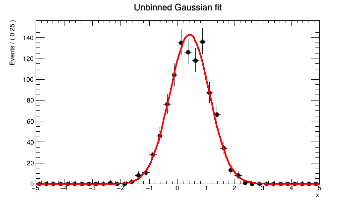
2.2 Residual 与显示用的 pull
residHist("observed","fitted") 计算数据减曲线；pullHist 再除以图中数据点对应的误差。给数据和曲线起名字，避免添加组分曲线后误把最后画的本底当成总模型。下面画的是显示用的 pull，并不是对每个原始事件定义的残差。
gauss_pull = frame.pullHist("observed", "fitted")
pull_frame = x.frame(RF.Title("Gaussian fit: display pull"))
pull_frame.addPlotable(gauss_pull, "P")
pull_frame.GetYaxis().SetTitle("(data - curve) / data error")
c = ROOT.TCanvas("c_roo_gauss_pull", "Gaussian pull", 720, 330)
pull_frame.Draw()
zero_gauss = ROOT.TLine(-5, 0, 5, 0)
zero_gauss.SetLineStyle(2)
zero_gauss.Draw()
c.SaveAs("fit_figures/roofit-gaussian-pull.png")
display(Image(filename="fit_figures/roofit-gaussian-pull.png"))auto gauss_pull = frame->pullHist("observed", "fitted");
auto pull_frame = x.frame(Title("Gaussian fit: display pull"));
pull_frame->addPlotable(gauss_pull, "P");
pull_frame->GetYaxis()->SetTitle("(data - curve) / data error");
c = new TCanvas("c_roo_gauss_pull", "Gaussian pull", 720, 330);
pull_frame->Draw();
auto zero_gauss = new TLine(-5, 0, 5, 0);
zero_gauss->SetLineStyle(2);
zero_gauss->Draw();
c->SaveAs("fit_figures/roofit-gaussian-pull.png");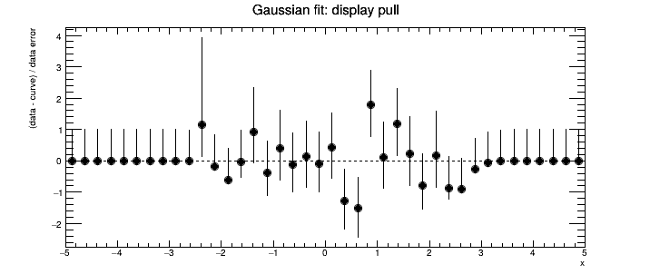
status()==0 表示 minimizer 报告成功，covQual()==3 表示协方差质量被认为准确；它们不检验 Gaussian 是否为正确的物理模型。RooPlot::chiSquare 可给图上曲线的 $\chi^2/\mathrm{ndf}$，但它依赖显示 bins 与误差条，不是 unbinned likelihood 自身的 goodness-of-fit，更不能只凭该数认定模型成立。接口见 rf109：residual 与 pull。
3. 从 TTree 或 TH1 导入数据
在实验中，观测值常存在 TTree 中。RooFit 导入时按变量名匹配 branch，并只接受变量允许范围内的数据，所以要核对导入前后的事例数。下面先用刚才的样本构造一个小 TTree，随后演示导入；实际分析可把它替换为从 ROOT 文件读取的 TTree。
tree = ROOT.TTree("events", "Gaussian toy events")
value = array("d", [0])
tree.Branch("x", value, "x/D")
h_import = ROOT.TH1D("h_import", ";x;counts / bin", 40, -5, 5)
for i in range(gauss_data.numEntries()):
value[0] = gauss_data.get(i).getRealValue("x")
tree.Fill()
h_import.Fill(value[0])
from_tree = ROOT.RooDataSet("from_tree", "imported events", obs, RF.Import(tree))
from_hist = ROOT.RooDataHist("from_hist", "imported counts", ROOT.RooArgList(x), RF.Import(h_import))
print("TTree entries:", tree.GetEntries(), "RooDataSet entries:", from_tree.numEntries())
print("TH1 counts:", h_import.Integral(), "RooDataHist counts:", from_hist.sumEntries())TTree tree("events", "Gaussian toy events");
double value = 0;
tree.Branch("x", &value, "x/D");
TH1D h_import("h_import", ";x;counts / bin", 40, -5, 5);
for (int i = 0; i < gauss_data->numEntries(); ++i) {
value = gauss_data->get(i)->getRealValue("x");
tree.Fill();
h_import.Fill(value);
}
RooDataSet from_tree("from_tree", "imported events", obs, Import(tree));
RooDataHist from_hist("from_hist", "imported counts", RooArgList(x), Import(h_import));
std::cout << "TTree entries: " << tree.GetEntries() << " RooDataSet entries: " << from_tree.numEntries() << std::endl;
std::cout << "TH1 counts: " << h_import.Integral() << " RooDataHist counts: " << from_hist.sumEntries() << std::endl;TTree entries: 1000 RooDataSet entries: 1000 TH1 counts: 1000.0 RooDataHist counts: 1000.0
RooDataHist::numEntries() 数的是储存的 bin 条目；计数总和要用 sumEntries()。Histogram 不再保留每个事件在 bin 内的具体位置，不能把 bin 中心复制若干次当成原来的 unbinned 数据。
4. Signal + background：同一份讲义数据
4.1 定义模型并读取 600 个事件
沿用讲义与 ROOT Fit 教程的例子：在 $2.6\le m<3.8$ GeV 内拟合 Gaussian 信号与 exponential 本底。峰位 $\mu$、峰宽 $\sigma$、本底尺度 $\beta$ 都是待估参数；本节比较只拟合形状和同时拟合产额两种做法。
$$ \lambda(m)=N_s f_s(m;\mu,\sigma)+N_b f_b(m;\beta), \qquad \int_{2.6}^{3.8}f_s\,dm=\int_{2.6}^{3.8}f_b\,dm=1. $$
RooFit 自动在 m 的范围内归一化 PDF。Exponential 的参数是指数系数 $k$，所以用 expr 将它写成 $k=-1/\beta$，最终仍直接拟合并报告讲义中的 $\beta$。
RooWorkspace.factory 是创建对象的简写：mu[3.1,2.6,3.8] 给初值与搜索范围；Gaussian::sig(...) 创建名为 sig 的 PDF；SUM::model(ns*sig,nb*bkg) 给两个组分各一个产额。以下五个参数都允许变化。
w = ROOT.RooWorkspace("w", "lecture signal and background")
w.factory("Gaussian::sig(m[2.6,3.8],mu[3.1,2.6,3.8],sigma[0.035,0.005,0.15])")
w.factory("expr::slope('-1/@0',beta[0.36,0.03,3.0])")
w.factory("Exponential::bkg(m,slope)")
w.factory("SUM::model(ns[80,0,1200]*sig,nb[520,0,1200]*bkg)")
xx = w.var("m")
xx.SetTitle("Invariant mass m")
xx.setUnit("GeV")
xx.setBins(48)
model = w.pdf("model")
ns, nb = w.var("ns"), w.var("nb")
mass_values = [float(row.split(",")[0])
for row in Path("data/lecture_mass_events.csv").read_text().splitlines() if row.strip()]
mass_obs = ROOT.RooArgSet(xx)
data = ROOT.RooDataSet("spectrum_data", "600 lecture events", mass_obs)
for mass in mass_values:
if not 2.6 <= mass < 3.8:
raise ValueError("Mass outside the lecture fit range")
xx.setVal(mass)
data.add(mass_obs)
print("Events read =", len(mass_values), "; events fitted =", data.numEntries())RooWorkspace w("w", "lecture signal and background");
w.factory("Gaussian::sig(m[2.6,3.8],mu[3.1,2.6,3.8],sigma[0.035,0.005,0.15])");
w.factory("expr::slope('-1/@0',beta[0.36,0.03,3.0])");
w.factory("Exponential::bkg(m,slope)");
w.factory("SUM::model(ns[80,0,1200]*sig,nb[520,0,1200]*bkg)");
auto xx = w.var("m");
xx->SetTitle("Invariant mass m");
xx->setUnit("GeV");
xx->setBins(48);
auto model = w.pdf("model");
auto ns = w.var("ns");
auto nb = w.var("nb");
std::ifstream input("data/lecture_mass_events.csv");
if (!input) throw std::runtime_error("Missing data/lecture_mass_events.csv: unpack the full tutorial bundle.");
std::vector<double> mass_values;
std::string row;
while (std::getline(input, row))
if (!row.empty()) mass_values.push_back(std::stod(row.substr(0, row.find(','))));
RooArgSet mass_obs(*xx);
auto data = new RooDataSet("spectrum_data", "600 lecture events", mass_obs);
for (double mass : mass_values) {
if (!(mass >= 2.6 && mass < 3.8)) throw std::runtime_error("Mass outside the lecture fit range");
xx->setVal(mass);
data->add(mass_obs);
}
std::cout << "Events read = " << mass_values.size() << "; events fitted = " << data->numEntries() << std::endl;Events read = 600 ; events fitted = 600
CSV 第一列是质量，第二列是模拟标签；代码只读取第一列。这里读取固定数据，不在运行时重新生成样本。
4.2 Unbinned ML：先只拟合形状
如果以已经观测到的 $N=600$ 个事件为条件，信号比例为 $\alpha$，则
$$f(m)=\alpha f_s(m)+(1-\alpha)f_b(m),\qquad \ln L=\sum_{j=1}^{600}\ln f(m_j).$$
两个组分只给一个系数 frac，另一个系数自动是 1-frac。此时拟合 $(\alpha,\mu,\sigma,\beta)$ 四个参数，extended=False 明确不使用总计数的 Poisson 项。
为了将四种 ML 拟合与讲义逐项比较，下面把“创建 NLL → 最小化 → 计算曲率误差”写成一个小函数。extended 选择是否包含总计数；binned 选择是否按 bin 积分。setEps 设置数值收敛精度，不改变 likelihood 的定义。入门时也可像第 2 节一样直接使用 fitTo。
def fit_ml(pdf, sample, extended, binned=False):
options = [RF.Extended(extended)]
if binned:
options.append(RF.IntegrateBins(1e-6))
objective = pdf.createNLL(sample, *options)
fit_minimizer = ROOT.RooMinimizer(objective)
fit_minimizer.setPrintLevel(-1)
fit_minimizer.setEps(1e-6)
fit_minimizer.setErrorLevel(0.5)
fit_minimizer.minimize("Minuit2", "Migrad")
fit_minimizer.hesse()
return fit_minimizer.save()auto fit_ml = [](RooAbsPdf& pdf, RooAbsData& sample, bool extended, bool binned=false) {
auto objective = binned ? pdf.createNLL(sample, Extended(extended), IntegrateBins(1e-6))
: pdf.createNLL(sample, Extended(extended));
RooMinimizer fit_minimizer(*objective);
fit_minimizer.setPrintLevel(-1);
fit_minimizer.setEps(1e-6);
fit_minimizer.setErrorLevel(0.5);
fit_minimizer.minimize("Minuit2", "Migrad");
fit_minimizer.hesse();
return fit_minimizer.save();
};w.factory("SUM::shape(frac[0.15,0,1]*sig,bkg)")
shape = w.pdf("shape")
shape_result = fit_ml(shape, data, extended=False)
fraction = w.var("frac")
print("Unbinned shape status =", shape_result.status(), "covQual =", shape_result.covQual())
for name in ("frac", "mu", "sigma", "beta"):
par = w.var(name)
print(f"{name:5s} = {par.getVal():.5f} +/- {par.getError():.5f}")
w.saveSnapshot("shape_fit", w.allVars())
shape_frame = xx.frame(RF.Title("Unbinned ML: shape fit"))
data.plotOn(shape_frame, RF.Binning(48), RF.XErrorSize(0), RF.Name("shape_data"))
shape.plotOn(shape_frame, RF.Name("shape_total"), RF.LineColor(ROOT.kRed))
shape_frame.GetYaxis().SetTitle("Events / 25 MeV")
c = ROOT.TCanvas("c_roo_shape", "Shape fit", 800, 500)
shape_frame.Draw()
shape_legend = ROOT.TLegend(0.57, 0.72, 0.89, 0.88)
shape_legend.SetBorderSize(0)
shape_legend.AddEntry(shape_frame.findObject("shape_data"), "600 lecture events", "pe")
shape_legend.AddEntry(shape_frame.findObject("shape_total"), "Unbinned shape ML", "l")
shape_legend.Draw()
c.SaveAs("fit_figures/roofit-shape-fit.png")
display(Image(filename="fit_figures/roofit-shape-fit.png"))w.factory("SUM::shape(frac[0.15,0,1]*sig,bkg)");
auto shape = w.pdf("shape");
auto shape_result = fit_ml(*shape, *data, false);
auto fraction = w.var("frac");
std::cout << "Unbinned shape status = " << shape_result->status() << " covQual = " << shape_result->covQual() << std::endl;
for (const char* name : {"frac", "mu", "sigma", "beta"}) {
auto par = w.var(name);
std::cout << name << " = " << par->getVal() << " +/- " << par->getError() << std::endl;
}
w.saveSnapshot("shape_fit", w.allVars());
auto shape_frame = xx->frame(Title("Unbinned ML: shape fit"));
data->plotOn(shape_frame, Binning(48), XErrorSize(0), Name("shape_data"));
shape->plotOn(shape_frame, Name("shape_total"), LineColor(kRed));
shape_frame->GetYaxis()->SetTitle("Events / 25 MeV");
c = new TCanvas("c_roo_shape", "Shape fit", 800, 500);
shape_frame->Draw();
auto shape_legend = new TLegend(0.57, 0.72, 0.89, 0.88);
shape_legend->SetBorderSize(0);
shape_legend->AddEntry(shape_frame->findObject("shape_data"), "600 lecture events", "pe");
shape_legend->AddEntry(shape_frame->findObject("shape_total"), "Unbinned shape ML", "l");
shape_legend->Draw();
c->SaveAs("fit_figures/roofit-shape-fit.png");Unbinned shape status = 0 covQual = 3 frac = 0.15159 +/- 0.02307 mu = 3.10457 +/- 0.00802 sigma = 0.04729 +/- 0.00683 beta = 0.35523 +/- 0.02182
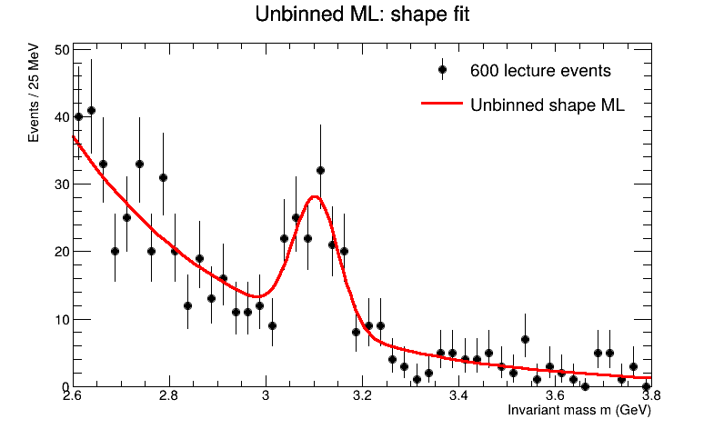
4.3 Extended unbinned ML：加入总计数
如果还要报告信号和本底产额，将期望总数记为 $\nu=N_s+N_b$，再乘上总计数概率：
$$ L_{\rm ext}=\underbrace{\frac{\nu^Ne^{-\nu}}{N!}}_{\text{total count}} \prod_{j=1}^{N}\frac{N_s f_s(m_j)+N_b f_b(m_j)}{\nu} =\frac{e^{-(N_s+N_b)}}{N!}\prod_{j=1}^{N}[N_s f_s(m_j)+N_b f_b(m_j)]. $$
因此实际最小化的函数是
$$-\ln L_{\rm ext}=N_s+N_b-\sum_j\ln[N_s f_s(m_j)+N_b f_b(m_j)]+\text{constant}.$$
这次拟合 $(N_s,N_b,\mu,\sigma,\beta)$ 五个参数。这里总产额完全自由，因此最优总数为 $N_s+N_b=N$，形状参数应与上一节相同；extended fit 还给出包含总计数涨落的产额误差。实际要提取峰面积时，直接使用本节做法。
ns.setVal(80)
nb.setVal(520)
result = fit_ml(model, data, extended=True)
print("status =", result.status(), "covQual =", result.covQual(), "EDM =", result.edm())
for name in ("ns", "nb", "mu", "sigma", "beta"):
par = w.var(name)
print(f"{name:5s} = {par.getVal():.5f} +/- {par.getError():.5f}")
print(f"Expected total = {ns.getVal()+nb.getVal():.3f}")
w.saveSnapshot("unbinned_fit", w.allVars())ns->setVal(80);
nb->setVal(520);
auto result = fit_ml(*model, *data, true);
std::cout << "status = " << result->status() << " covQual = " << result->covQual() << " EDM = " << result->edm() << std::endl;
for (const char* name : {"ns", "nb", "mu", "sigma", "beta"}) {
auto par = w.var(name);
std::cout << name << " = " << par->getVal() << " +/- " << par->getError() << std::endl;
}
std::cout << "Expected total = " << ns->getVal()+nb->getVal() << std::endl;
w.saveSnapshot("unbinned_fit", w.allVars());status = 0 covQual = 3 EDM = 4.541673227534462e-09 ns = 90.95499 +/- 14.31727 nb = 509.04489 +/- 24.95113 mu = 3.10457 +/- 0.00802 sigma = 0.04729 +/- 0.00682 beta = 0.35523 +/- 0.02181 Expected total = 600.000
True
应得到讲义中的 $N_s\simeq90.95$、$N_b\simeq509.05$、$\mu\simeq3.10457$ GeV、$\sigma\simeq0.04729$ GeV、$\beta\simeq0.35523$ GeV。saveSnapshot 保存当前参数，后续分箱拟合或 scan 改变参数后，可以用 loadSnapshot 恢复。
4.4 总模型、信号、本底与 residual
用 Components("bkg") 从总模型中画本底，保留联合拟合确定的本底产额。数据点及曲线在 legend 中标识。图中的 48 个 bin 只用于显示；上述拟合仍然用了每个事件的质量。
sb_frame = xx.frame(RF.Title("Extended unbinned ML"))
data.plotOn(sb_frame, RF.Binning(48), RF.XErrorSize(0), RF.Name("sb_data"))
model.plotOn(sb_frame, RF.Name("sb_total"), RF.LineColor(ROOT.kRed))
model.plotOn(sb_frame, RF.Components("bkg"), RF.Name("sb_background"), RF.LineColor(ROOT.kBlue), RF.LineStyle(2))
model.plotOn(sb_frame, RF.Components("sig"), RF.Name("sb_signal"), RF.LineColor(ROOT.kGreen+2), RF.LineStyle(1))
sb_frame.GetYaxis().SetTitle("Events / 25 MeV")
sb_frame.SetMinimum(0)
sb_frame.SetMaximum(55)
c = ROOT.TCanvas("c_roo_sb", "Lecture signal plus background", 800, 500)
sb_frame.Draw()
sb_legend = ROOT.TLegend(0.57, 0.60, 0.89, 0.88)
sb_legend.SetBorderSize(0)
for name, label, option in (("sb_data", "600 lecture events", "pe"),
("sb_total", "Extended unbinned ML", "l"),
("sb_background", "Fitted background", "l"),
("sb_signal", "Fitted signal", "l")):
sb_legend.AddEntry(sb_frame.findObject(name), label, option)
sb_legend.Draw()
c.SaveAs("fit_figures/roofit-signal-background.png")
display(Image(filename="fit_figures/roofit-signal-background.png"))auto sb_frame = xx->frame(Title("Extended unbinned ML"));
data->plotOn(sb_frame, Binning(48), XErrorSize(0), Name("sb_data"));
model->plotOn(sb_frame, Name("sb_total"), LineColor(kRed));
model->plotOn(sb_frame, Components("bkg"), Name("sb_background"), LineColor(kBlue), LineStyle(2));
model->plotOn(sb_frame, Components("sig"), Name("sb_signal"), LineColor(kGreen+2), LineStyle(1));
sb_frame->GetYaxis()->SetTitle("Events / 25 MeV");
sb_frame->SetMinimum(0);
sb_frame->SetMaximum(55);
c = new TCanvas("c_roo_sb", "Lecture signal plus background", 800, 500);
sb_frame->Draw();
auto sb_legend = new TLegend(0.57, 0.60, 0.89, 0.88);
sb_legend->SetBorderSize(0);
sb_legend->AddEntry(sb_frame->findObject("sb_data"), "600 lecture events", "pe");
sb_legend->AddEntry(sb_frame->findObject("sb_total"), "Extended unbinned ML", "l");
sb_legend->AddEntry(sb_frame->findObject("sb_background"), "Fitted background", "l");
sb_legend->AddEntry(sb_frame->findObject("sb_signal"), "Fitted signal", "l");
sb_legend->Draw();
c->SaveAs("fit_figures/roofit-signal-background.png");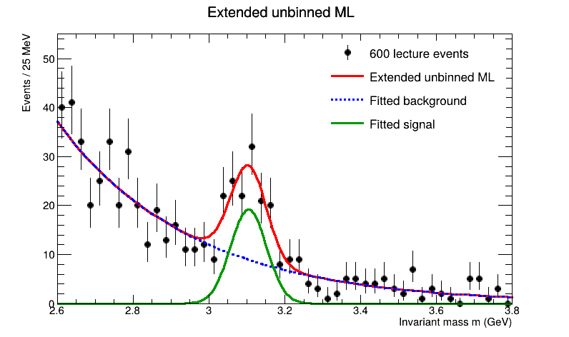
下面把同样的事件分箱后画 $n_i-\nu_i$，查看峰附近和两侧是否还存在结构。RooFit 图中的 Poisson 误差棒只负责显示，unbinned 拟合直接使用事件值，不使用这些误差棒作权重。
sb_residual = sb_frame.residHist("sb_data", "sb_total")
sb_res_frame = xx.frame(RF.Title("Signal + background residual"))
sb_res_frame.addPlotable(sb_residual, "P")
sb_res_frame.GetYaxis().SetTitle("Data - model (events / bin)")
c = ROOT.TCanvas("c_roo_sb_res", "Signal background residual", 800, 330)
sb_res_frame.Draw()
zero_sb = ROOT.TLine(2.6, 0, 3.8, 0)
zero_sb.SetLineStyle(2)
zero_sb.Draw()
c.SaveAs("fit_figures/roofit-signal-background-residual.png")
display(Image(filename="fit_figures/roofit-signal-background-residual.png"))auto sb_residual = sb_frame->residHist("sb_data", "sb_total");
auto sb_res_frame = xx->frame(Title("Signal + background residual"));
sb_res_frame->addPlotable(sb_residual, "P");
sb_res_frame->GetYaxis()->SetTitle("Data - model (events / bin)");
c = new TCanvas("c_roo_sb_res", "Signal background residual", 800, 330);
sb_res_frame->Draw();
auto zero_sb = new TLine(2.6, 0, 3.8, 0);
zero_sb->SetLineStyle(2);
zero_sb->Draw();
c->SaveAs("fit_figures/roofit-signal-background-residual.png");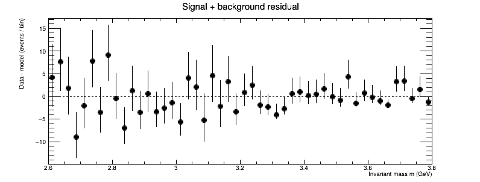
5. 从 unbinned 到 binned：先求每个 bin 的概率
5.1 Multinomial likelihood 与实际拟合
Unbinned ML 使用每个事件的 $m_j$。如果只保留各 bin 的计数，就先把密度积分成“一个事件落入第 $i$ 个 bin 的概率”：
$$p_i(\boldsymbol\theta)=\int_{\ell_i}^{u_i}f(m;\boldsymbol\theta)\,dm,\qquad \sum_i p_i=1.$$
一组指定的事件归属具有概率 $\prod_i p_i^{n_i}$。产生同一组计数 $(n_1,\ldots,n_B)$ 的事件排列有 $N!/\prod_i n_i!$ 种，所以在已观测总数 $N$ 这个条件下得到 multinomial distribution：
$$ L_{\rm bin}=\frac{N!}{\prod_i n_i!}\prod_i p_i^{n_i}, \qquad \ln L_{\rm bin}=\text{constant}+\sum_i n_i\ln p_i. $$
这就是讲义中从逐事件数据到分箱数据的过渡。对本例代入 $p_i=\alpha\int_i f_s\,dm+(1-\alpha)\int_i f_b\,dm$，即可拟合同样四个形状参数。
xx.setBins(48)
binned = ROOT.RooDataHist("binned", "same 600 events in 48 bins", ROOT.RooArgSet(xx), data)
w.loadSnapshot("shape_fit")
binned_shape_result = fit_ml(shape, binned, extended=False, binned=True)
print("Binned shape status =", binned_shape_result.status(), "covQual =", binned_shape_result.covQual())
for name in ("frac", "mu", "sigma", "beta"):
par = w.var(name)
print(f"{name:5s} = {par.getVal():.5f} +/- {par.getError():.5f}")xx->setBins(48);
RooDataHist binned("binned", "same 600 events in 48 bins", RooArgSet(*xx), *data);
w.loadSnapshot("shape_fit");
auto binned_shape_result = fit_ml(*shape, binned, false, true);
std::cout << "Binned shape status = " << binned_shape_result->status() << " covQual = " << binned_shape_result->covQual() << std::endl;
for (const char* name : {"frac", "mu", "sigma", "beta"}) {
auto par = w.var(name);
std::cout << name << " = " << par->getVal() << " +/- " << par->getError() << std::endl;
}Binned shape status = 0 covQual = 3 frac = 0.15108 +/- 0.02287 mu = 3.10549 +/- 0.00772 sigma = 0.04518 +/- 0.00681 beta = 0.35499 +/- 0.02177
RooDataHist 来自刚才的同一个 data，没有重新抽样。IntegrateBins(1e-6) 要求按 bin 积分；它的数值控制积分精度。numEntries() 数 bin，sumEntries() 才是事件总数。
shape.plotOn(shape_frame, RF.Name("shape_binned"), RF.LineColor(ROOT.kBlue), RF.LineStyle(2))
c = ROOT.TCanvas("c_roo_binned_shape", "Shape ML comparison", 800, 500)
shape_frame.SetTitle("Same lecture data: shape ML")
shape_frame.Draw()
shape_compare_legend = ROOT.TLegend(0.57, 0.66, 0.89, 0.88)
shape_compare_legend.SetBorderSize(0)
shape_compare_legend.AddEntry(shape_frame.findObject("shape_data"), "600 lecture events", "pe")
shape_compare_legend.AddEntry(shape_frame.findObject("shape_total"), "Unbinned shape ML", "l")
shape_compare_legend.AddEntry(shape_frame.findObject("shape_binned"), "Binned shape ML", "l")
shape_compare_legend.Draw()
c.SaveAs("fit_figures/roofit-binned-shape.png")
display(Image(filename="fit_figures/roofit-binned-shape.png"))shape->plotOn(shape_frame, Name("shape_binned"), LineColor(kBlue), LineStyle(2));
c = new TCanvas("c_roo_binned_shape", "Shape ML comparison", 800, 500);
shape_frame->SetTitle("Same lecture data: shape ML");
shape_frame->Draw();
auto shape_compare_legend = new TLegend(0.57, 0.66, 0.89, 0.88);
shape_compare_legend->SetBorderSize(0);
shape_compare_legend->AddEntry(shape_frame->findObject("shape_data"), "600 lecture events", "pe");
shape_compare_legend->AddEntry(shape_frame->findObject("shape_total"), "Unbinned shape ML", "l");
shape_compare_legend->AddEntry(shape_frame->findObject("shape_binned"), "Binned shape ML", "l");
shape_compare_legend->Draw();
c->SaveAs("fit_figures/roofit-binned-shape.png");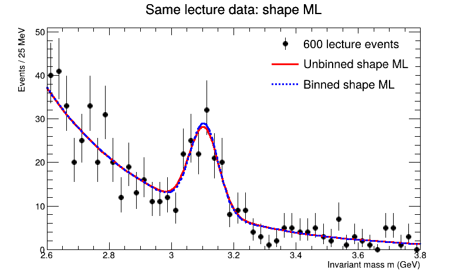
5.2 Extended binned ML：为什么出现 Poisson 连乘
令 $\nu=N_s+N_b$，$\nu_i=\nu p_i$。把总数的 Poisson 概率与 multinomial 概率相乘：
$$ \frac{\nu^Ne^{-\nu}}{N!} \frac{N!}{\prod_i n_i!}\prod_i\left(\frac{\nu_i}{\nu}\right)^{n_i} =\prod_i\frac{\nu_i^{n_i}e^{-\nu_i}}{n_i!}, $$
其中用了 $\sum_i n_i=N$、$\sum_i\nu_i=\nu$。因此讲义中的 Poisson 连乘已经同时包含总计数和形状信息。
对 signal + background，$\nu_i=N_s\int_i f_s\,dm+N_b\int_i f_b\,dm$。保留全部 48 个 bin；空 bin 的 likelihood 为 $e^{-\nu_i}$，仍约束该处的预测计数。
w.loadSnapshot("unbinned_fit")
compare = xx.frame(RF.Title("Same lecture data: extended ML"))
data.plotOn(compare, RF.Binning(48), RF.XErrorSize(0), RF.Name("compare_data"))
model.plotOn(compare, RF.Name("compare_unbinned"), RF.LineColor(ROOT.kRed))
binned_result = fit_ml(model, binned, extended=True, binned=True)
print("Unbinned events =", data.numEntries(), "; binned total =", binned.sumEntries())
print("Binned status =", binned_result.status(), "covQual =", binned_result.covQual())
for name in ("ns", "nb", "mu", "sigma", "beta"):
pu = result.floatParsFinal().find(name)
pb = w.var(name)
print(f"{name}: unbinned {pu.getVal():.5f} +/- {pu.getError():.5f}; binned {pb.getVal():.5f} +/- {pb.getError():.5f}")
model.plotOn(compare, RF.Name("compare_binned"), RF.LineColor(ROOT.kBlue), RF.LineStyle(2))
compare.GetYaxis().SetTitle("Events / 25 MeV")
compare.SetMinimum(0)
compare.SetMaximum(55)
c = ROOT.TCanvas("c_roo_compare", "Binned and unbinned", 800, 500)
compare.Draw()
compare_legend = ROOT.TLegend(0.57, 0.66, 0.89, 0.88)
compare_legend.SetBorderSize(0)
compare_legend.AddEntry(compare.findObject("compare_data"), "600 lecture events", "pe")
compare_legend.AddEntry(compare.findObject("compare_unbinned"), "Extended unbinned ML", "l")
compare_legend.AddEntry(compare.findObject("compare_binned"), "Extended binned ML", "l")
compare_legend.Draw()
w.loadSnapshot("unbinned_fit")
c.SaveAs("fit_figures/roofit-binned-comparison.png")
display(Image(filename="fit_figures/roofit-binned-comparison.png"))w.loadSnapshot("unbinned_fit");
auto compare = xx->frame(Title("Same lecture data: extended ML"));
data->plotOn(compare, Binning(48), XErrorSize(0), Name("compare_data"));
model->plotOn(compare, Name("compare_unbinned"), LineColor(kRed));
auto binned_result = fit_ml(*model, binned, true, true);
std::cout << "Unbinned events = " << data->numEntries() << "; binned total = " << binned.sumEntries() << std::endl;
std::cout << "Binned status = " << binned_result->status() << " covQual = " << binned_result->covQual() << std::endl;
for (const char* name : {"ns", "nb", "mu", "sigma", "beta"}) {
auto pu = static_cast<const RooRealVar*>(result->floatParsFinal().find(name));
auto pb = w.var(name);
std::cout << name << ": unbinned " << pu->getVal() << " +/- " << pu->getError()
<< "; binned " << pb->getVal() << " +/- " << pb->getError() << std::endl;
}
model->plotOn(compare, Name("compare_binned"), LineColor(kBlue), LineStyle(2));
compare->GetYaxis()->SetTitle("Events / 25 MeV");
compare->SetMinimum(0);
compare->SetMaximum(55);
c = new TCanvas("c_roo_compare", "Binned and unbinned", 800, 500);
compare->Draw();
auto compare_legend = new TLegend(0.57, 0.66, 0.89, 0.88);
compare_legend->SetBorderSize(0);
compare_legend->AddEntry(compare->findObject("compare_data"), "600 lecture events", "pe");
compare_legend->AddEntry(compare->findObject("compare_unbinned"), "Extended unbinned ML", "l");
compare_legend->AddEntry(compare->findObject("compare_binned"), "Extended binned ML", "l");
compare_legend->Draw();
w.loadSnapshot("unbinned_fit");
c->SaveAs("fit_figures/roofit-binned-comparison.png");Unbinned events = 600 ; binned total = 600.0 Binned status = 0 covQual = 3 ns: unbinned 90.95499 +/- 14.31727; binned 90.64878 +/- 14.21713 nb: unbinned 509.04489 +/- 24.95113; binned 509.35127 +/- 24.91160 mu: unbinned 3.10457 +/- 0.00802; binned 3.10549 +/- 0.00772 sigma: unbinned 0.04729 +/- 0.00682; binned 0.04518 +/- 0.00681 beta: unbinned 0.35523 +/- 0.02181; binned 0.35499 +/- 0.02177
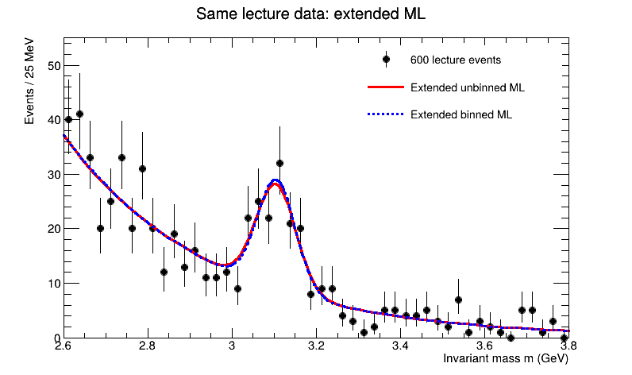
这里的 binned 结果应与 ROOT Fit 第 4 节一致：数据、48 个 bin、模型、五个自由参数以及 bin 积分都相同。Unbinned 与 binned 的小差异来自分箱丢失的 bin 内位置。
有逐事件数据时，可以先用 unbinned；已有 histogram，或事件数很大需要提高速度时，用 binned 并检查合理改变 bin 宽后结果是否稳定。两种方法都可以使用 extended likelihood。
6. 产额、积分与派生量的误差
ns.getError() 已是联合拟合给出的信号产额误差，它包含其他自由参数带来的相关影响，不需要再加一次同一拟合的本底误差。但对派生量 $g(\boldsymbol\theta)$，仍需使用完整协方差：
$$\sigma_g^2=\boldsymbol J C\boldsymbol J^T,\qquad J_j=\frac{\partial g}{\partial\theta_j}.$$
6.1 固定能量区间内的信号数
设固定 ROI 为 $[3.05,3.15]$ GeV，信号数为
$$N_{s,\mathrm{ROI}}=N_s\,F_s,\qquad F_s=\int_{\mathrm{ROI}}p_s(x)dx.$$
$F_s$ 随峰位与宽度变化，因此误差不能简单写成 $F_s\sigma_{N_s}$。createIntegral 建立依赖这些参数的积分对象，RooFormulaVar 再把产额与积分联系起来，getPropagatedError(result) 沿依赖关系传播参数协方差。
xx.setRange("roi", 3.05, 3.15)
signal_fraction = w.pdf("sig").createIntegral(ROOT.RooArgSet(xx), RF.NormSet(ROOT.RooArgSet(xx)), RF.Range("roi"))
signal_roi = ROOT.RooFormulaVar("signal_roi", "@0*@1", ROOT.RooArgList(ns, signal_fraction))
print(f"Signal fraction in ROI = {signal_fraction.getVal():.4f}")
print(f"Signal in ROI = {signal_roi.getVal():.3f} +/- {signal_roi.getPropagatedError(result):.3f}")
print(f"corr(ns,nb) = {result.correlation('ns','nb'):.4f}")xx->setRange("roi", 3.05, 3.15);
auto signal_fraction = w.pdf("sig")->createIntegral(RooArgSet(*xx), NormSet(RooArgSet(*xx)), Range("roi"));
RooFormulaVar signal_roi("signal_roi", "@0*@1", RooArgList(*ns, *signal_fraction));
std::cout << "Signal fraction in ROI = " << signal_fraction->getVal() << std::endl;
std::cout << "Signal in ROI = " << signal_roi.getVal() << " +/- " << signal_roi.getPropagatedError(*result) << std::endl;
std::cout << "corr(ns,nb) = " << result->correlation("ns", "nb") << std::endl;Signal fraction in ROI = 0.7073 Signal in ROI = 64.336 +/- 9.820 corr(ns,nb) = -0.3187
NormSet 指定相对于哪个观测量归一化，Range("roi") 只规定积分区域，不改变前面拟合的数据。此结果是在 $[2.6,3.8]$ GeV 中定义的信号产额乘以 ROI 比例。真正改变拟合范围时，要同时明确 PDF 归一化和 yield 所对应的区域，不能只缩短绘图横轴后重新解释 ns。局部范围的 extended fit 示例介绍 Range、NormRange 与 fixCoefRange 的配合。
6.2 拟合曲线的不确定度
VisualizeError 用 RooFitResult 的参数误差与相关性画出模型曲线的不确定度带。RelativeExpected 使曲线按模型的期望总产额归一化，因此带中也包含产额的不确定度；若固定按观测总数缩放，只能看到形状的不确定度。这个带不是新一批计数数据的涨落范围，图上的数据误差条是另一种不确定度。
error_frame = xx.frame(RF.Title("Fitted model uncertainty"))
data.plotOn(error_frame, RF.Binning(40), RF.XErrorSize(0))
model.plotOn(error_frame, RF.VisualizeError(result, 1), RF.Normalization(1, ROOT.RooAbsReal.RelativeExpected), RF.FillColor(ROOT.kAzure-9))
model.plotOn(error_frame, RF.Normalization(1, ROOT.RooAbsReal.RelativeExpected), RF.LineColor(ROOT.kBlue))
data.plotOn(error_frame, RF.Binning(40), RF.XErrorSize(0))
c = ROOT.TCanvas("c_roo_band", "Model uncertainty", 720, 450)
error_frame.Draw()
c.SaveAs("fit_figures/roofit-model-band.png")
display(Image(filename="fit_figures/roofit-model-band.png"))auto error_frame = xx->frame(Title("Fitted model uncertainty"));
data->plotOn(error_frame, Binning(40), XErrorSize(0));
model->plotOn(error_frame, VisualizeError(*result, 1), Normalization(1, RooAbsReal::RelativeExpected), FillColor(kAzure-9));
model->plotOn(error_frame, Normalization(1, RooAbsReal::RelativeExpected), LineColor(kBlue));
data->plotOn(error_frame, Binning(40), XErrorSize(0));
c = new TCanvas("c_roo_band", "Model uncertainty", 720, 450);
error_frame->Draw();
c->SaveAs("fit_figures/roofit-model-band.png");ROOT 误差带绘图提示（原始日志）
[#0] WARNING:InputArguments -- RooAbsReal::plotOn(model) WARNING: argument CurveNameSuffix is duplicated [#0] WARNING:InputArguments -- RooAbsReal::plotOn(model) WARNING: argument CurveNameSuffix is duplicated [#0] WARNING:InputArguments -- RooAbsReal::plotOn(model) WARNING: argument CurveNameSuffix is duplicated [#0] WARNING:InputArguments -- RooAbsReal::plotOn(model) WARNING: argument CurveNameSuffix is duplicated [#0] WARNING:InputArguments -- RooAbsReal::plotOn(model) WARNING: argument CurveNameSuffix is duplicated [#0] WARNING:InputArguments -- RooAbsReal::plotOn(model) WARNING: argument CurveNameSuffix is duplicated [#0] WARNING:InputArguments -- RooAbsReal::plotOn(model) WARNING: argument CurveNameSuffix is duplicated [#0] WARNING:InputArguments -- RooAbsReal::plotOn(model) WARNING: argument CurveNameSuffix is duplicated [#0] WARNING:InputArguments -- RooAbsReal::plotOn(model) WARNING: argument CurveNameSuffix is duplicated [#0] WARNING:InputArguments -- RooAbsReal::plotOn(model) WARNING: argument CurveNameSuffix is duplicated [#0] WARNING:InputArguments -- RooAbsReal::plotOn(model) WARNING: argument CurveNameSuffix is duplicated
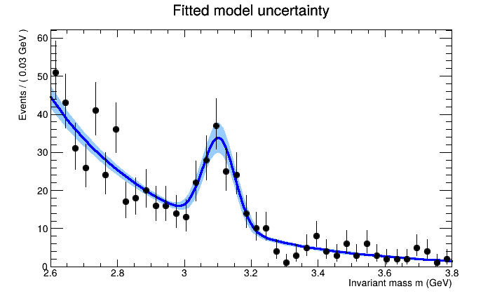
这些误差以所选信号与本底模型成立为前提。判断模型依赖时，可以在有物理依据的范围内改变本底描述或拟合区间，再比较结果；不应把模型间的差异隐藏到同一个统计误差里。
7. 指数衰减：有限观察范围与寿命
如果实验只接受 $0\le t< T=5$ s 的衰变时间，且区间内效率为常数，就在这个区间归一化 PDF。RooExponential(t,k) 表示
$$p(t\mid k)=\frac{e^{kt}}{\int_0^5e^{ku}du},\qquad k<0.$$
对应讲义的 $f_T(t;\tau)=e^{-t/\tau}/\{\tau[1-e^{-T/\tau}]\}$，且 $k=-1/\tau$。代入后实际最大化
$$\ln L=-N\ln\tau-\frac{\sum_j t_j}{\tau}-N\ln(1-e^{-T/\tau}).$$
下面保留原来的 300 事件寿命例子，分别运行 unbinned 和 binned ML。读出指数系数后用 $\tau=-1/k$ 换算寿命，误差用完整拟合结果传播。
7.1 同一个时间样本做两种拟合
生成寿命为 1 s 的 300 个区间内事件。这里总数固定，只估计形状，所以两个拟合均明确使用 non-extended likelihood。
t = ROOT.RooRealVar("t", "decay time", 0, 5, "s")
k = ROOT.RooRealVar("decay_k", "decay slope", -1, -5, -0.05)
decay = ROOT.RooExponential("decay", "decay PDF", t, k)
times = decay.generate(ROOT.RooArgSet(t), 300)
k.setVal(-0.7)
time_result = decay.fitTo(times, RF.Save(), RF.Extended(False), RF.PrintLevel(-1))
tau = ROOT.RooFormulaVar("tau", "-1/@0", ROOT.RooArgList(k))
print(f"Unbinned: tau = {tau.getVal():.4f} +/- {tau.getPropagatedError(time_result):.4f} s; status {time_result.status()}")
time_frame = t.frame(RF.Title("Finite-range decay fit"))
times.plotOn(time_frame, RF.Binning(20), RF.XErrorSize(0), RF.Name("time_data"))
decay.plotOn(time_frame, RF.Name("time_unbinned"), RF.LineColor(ROOT.kRed))RooRealVar t("t", "decay time", 0, 5, "s");
RooRealVar k("decay_k", "decay slope", -1, -5, -0.05);
RooExponential decay("decay", "decay PDF", t, k);
auto times = decay.generate(RooArgSet(t), 300);
k.setVal(-0.7);
auto time_result = decay.fitTo(*times, Save(), Extended(false), PrintLevel(-1));
RooFormulaVar tau("tau", "-1/@0", RooArgList(k));
std::cout << "Unbinned: tau = " << tau.getVal() << " +/- " << tau.getPropagatedError(*time_result)
<< " s; status " << time_result->status() << std::endl;
auto time_frame = t.frame(Title("Finite-range decay fit"));
times->plotOn(time_frame, Binning(20), XErrorSize(0), Name("time_data"));
decay.plotOn(time_frame, Name("time_unbinned"), LineColor(kRed));Unbinned: tau = 1.0188 +/- 0.0652 s; status 0
<cppyy.gbl.RooPlot object at 0x7c3813f00>
t.setBins(20)
time_bins = ROOT.RooDataHist("time_bins", "same decay times", ROOT.RooArgSet(t), times)
time_binned_result = decay.fitTo(time_bins, RF.Save(), RF.Extended(False), RF.IntegrateBins(1e-6), RF.PrintLevel(-1))
print(f"Binned: tau = {tau.getVal():.4f} +/- {tau.getPropagatedError(time_binned_result):.4f} s; status {time_binned_result.status()}")
decay.plotOn(time_frame, RF.Name("time_binned"), RF.LineColor(ROOT.kBlue), RF.LineStyle(2))
c = ROOT.TCanvas("c_roo_time", "Decay fit", 720, 440)
time_frame.Draw()
time_legend = ROOT.TLegend(0.57, 0.67, 0.89, 0.88)
time_legend.SetBorderSize(0)
time_legend.AddEntry(time_frame.findObject("time_data"), "Same decay times", "pe")
time_legend.AddEntry(time_frame.findObject("time_unbinned"), "Unbinned ML", "l")
time_legend.AddEntry(time_frame.findObject("time_binned"), "Binned ML", "l")
time_legend.Draw()
c.SaveAs("fit_figures/roofit-decay.png")
display(Image(filename="fit_figures/roofit-decay.png"))t.setBins(20);
RooDataHist time_bins("time_bins", "same decay times", RooArgSet(t), *times);
auto time_binned_result = decay.fitTo(time_bins, Save(), Extended(false), IntegrateBins(1e-6), PrintLevel(-1));
std::cout << "Binned: tau = " << tau.getVal() << " +/- " << tau.getPropagatedError(*time_binned_result)
<< " s; status " << time_binned_result->status() << std::endl;
decay.plotOn(time_frame, Name("time_binned"), LineColor(kBlue), LineStyle(2));
c = new TCanvas("c_roo_time", "Decay fit", 720, 440);
time_frame->Draw();
auto time_legend = new TLegend(0.57, 0.67, 0.89, 0.88);
time_legend->SetBorderSize(0);
time_legend->AddEntry(time_frame->findObject("time_data"), "Same decay times", "pe");
time_legend->AddEntry(time_frame->findObject("time_unbinned"), "Unbinned ML", "l");
time_legend->AddEntry(time_frame->findObject("time_binned"), "Binned ML", "l");
time_legend->Draw();
c->SaveAs("fit_figures/roofit-decay.png");Binned: tau = 1.0301 +/- 0.0664 s; status 0
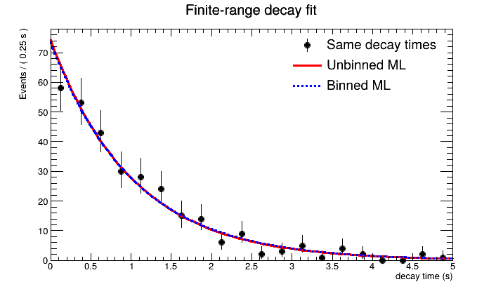
本例的接受时间区间由实验条件给定。实际分析时，把 t 的范围设成记录数据时使用的时间门，并在该范围内归一化；图中的两种拟合使用相同数据与相同时间门。
8. 参数误差：曲率法、profile 与 MINOS
讲义的曲率法把 $F=-\ln L$ 在最小值附近展开为
$$F\simeq F_{\min}+\tfrac12\delta\boldsymbol\theta^T H\delta\boldsymbol\theta, \qquad C=H^{-1},\quad \sigma_j=\sqrt{C_{jj}}.$$
hesse() 计算这个局部曲率矩阵。讲义的图解法则从 profile 曲线两侧寻找 $\Delta F=0.5$ 的交点，minos() 自动完成搜索。两者都使用同一个 likelihood；区别在于是否用局部抛物线近似。
先计算 HESSE，再为要报告的参数运行 MINOS。比较两个端点误差与 profile 的形状：接近对称且近似抛物线时报告对称误差；明显不对称时报告上下误差。样本数本身不能替代这一步判断。
8.1 从 fitTo 到 RooMinimizer
第 4 节的 fit_ml 已经使用 RooMinimizer。下面把步骤展开，在同一数据与模型上增加 minos，读取信号产额的上下误差，并画出 profile。
w.loadSnapshot("unbinned_fit")
nll = model.createNLL(data, RF.Extended())
minimizer = ROOT.RooMinimizer(nll)
minimizer.setPrintLevel(-1)
minimizer.setEps(1e-6)
minimizer.setErrorLevel(0.5)
migrad_status = minimizer.minimize("Minuit2", "Migrad")
hesse_status = minimizer.hesse()
minos_status = minimizer.minos(ROOT.RooArgSet(ns))
manual_result = minimizer.save()
print("Migrad, HESSE, MINOS status:", migrad_status, hesse_status, minos_status)
print(f"HESSE ns error = {ns.getError():.3f}")
print(f"ns = {ns.getVal():.3f}; MINOS {ns.getAsymErrorLo():+.3f}, {ns.getAsymErrorHi():+.3f}")w.loadSnapshot("unbinned_fit");
auto nll = model->createNLL(*data, Extended());
RooMinimizer minimizer(*nll);
minimizer.setPrintLevel(-1);
minimizer.setEps(1e-6);
minimizer.setErrorLevel(0.5);
int migrad_status = minimizer.minimize("Minuit2", "Migrad");
int hesse_status = minimizer.hesse();
int minos_status = minimizer.minos(RooArgSet(*ns));
auto manual_result = minimizer.save();
std::cout << "Migrad, HESSE, MINOS status: " << migrad_status << ", " << hesse_status << ", " << minos_status << std::endl;
std::cout << "HESSE ns error = " << ns->getError() << std::endl;
std::cout << "ns = " << ns->getVal() << "; MINOS " << ns->getAsymErrorLo() << ", " << ns->getAsymErrorHi() << std::endl;Migrad, HESSE, MINOS status: 0 0 0 HESSE ns error = 14.336 ns = 90.955; MINOS -13.922, +14.766
8.2 固定其他参数与 profile 的区别
直接画 NLL 关于 $N_s$ 的变化时，其他参数保持固定；createProfile 则在每一个 $N_s$ 处重新优化其他自由参数。其他参数能补偿部分变化，所以 profile 往往更宽，才对应把 nuisance parameters 一起考虑的 likelihood 区间。
横线 $\Delta(-\log L)=0.5$ 是正则渐近条件下一参数约 $1\sigma$ 的阈值。靠近 $N_s=0$ 等边界、极少事件或多重极小值时，不能自动把交点解释为精确的 68% 区间，更不能把 $N_s/\sigma_{N_s}$ 一律当作发现显著性。
scan = ns.frame(RF.Range(ns.getVal()-3*ns.getError(), ns.getVal()+3*ns.getError()),
RF.Title("Signal yield: fixed slice and profile"), RF.Bins(40))
nll.plotOn(scan, RF.ShiftToZero(), RF.Name("fixed_slice"), RF.LineColor(ROOT.kBlue), RF.LineStyle(2))
profile = nll.createProfile(ROOT.RooArgSet(ns))
profile.plotOn(scan, RF.ShiftToZero(), RF.Name("profile_curve"), RF.LineColor(ROOT.kRed))
scan.SetMinimum(0)
scan.SetMaximum(5)
scan.GetYaxis().SetTitle("#Delta(-ln L)")
scan.GetXaxis().SetTitle("Signal yield N_{s}")
c = ROOT.TCanvas("c_roo_profile", "Profile likelihood", 850, 530)
scan.Draw()
half_profile = ROOT.TLine(scan.GetXaxis().GetXmin(), 0.5, scan.GetXaxis().GetXmax(), 0.5)
half_profile.SetLineStyle(3)
half_profile.Draw()
curvature = ROOT.TF1("ns_curvature", "0.5*((x-[0])/[1])^2", scan.GetXaxis().GetXmin(), scan.GetXaxis().GetXmax())
curvature.SetParameters(manual_result.floatParsFinal().find("ns").getVal(), manual_result.floatParsFinal().find("ns").getError())
curvature.SetLineColor(ROOT.kGreen+2)
curvature.SetLineStyle(3)
curvature.Draw("same")
profile_legend = ROOT.TLegend(0.52, 0.62, 0.89, 0.88)
profile_legend.SetBorderSize(0)
profile_legend.AddEntry(scan.findObject("fixed_slice"), "Other parameters fixed", "l")
profile_legend.AddEntry(scan.findObject("profile_curve"), "Other parameters refitted", "l")
profile_legend.AddEntry(curvature, "Curvature approximation", "l")
profile_legend.AddEntry(half_profile, "#Delta(-ln L) = 0.5", "l")
profile_legend.Draw()
w.loadSnapshot("unbinned_fit")
c.SaveAs("fit_figures/roofit-profile.png")
display(Image(filename="fit_figures/roofit-profile.png"))auto scan = ns->frame(Range(ns->getVal()-3*ns->getError(), ns->getVal()+3*ns->getError()),
Title("Signal yield: fixed slice and profile"), Bins(40));
nll->plotOn(scan, ShiftToZero(), Name("fixed_slice"), LineColor(kBlue), LineStyle(2));
auto profile = nll->createProfile(RooArgSet(*ns));
profile->plotOn(scan, ShiftToZero(), Name("profile_curve"), LineColor(kRed));
scan->SetMinimum(0);
scan->SetMaximum(5);
scan->GetYaxis()->SetTitle("#Delta(-ln L)");
scan->GetXaxis()->SetTitle("Signal yield N_{s}");
c = new TCanvas("c_roo_profile", "Profile likelihood", 850, 530);
scan->Draw();
auto half_profile = new TLine(scan->GetXaxis()->GetXmin(), 0.5, scan->GetXaxis()->GetXmax(), 0.5);
half_profile->SetLineStyle(3);
half_profile->Draw();
auto curvature = new TF1("ns_curvature", "0.5*((x-[0])/[1])^2", scan->GetXaxis()->GetXmin(), scan->GetXaxis()->GetXmax());
auto ns_hesse = static_cast<const RooRealVar*>(manual_result->floatParsFinal().find("ns"));
curvature->SetParameters(ns_hesse->getVal(), ns_hesse->getError());
curvature->SetLineColor(kGreen+2);
curvature->SetLineStyle(3);
curvature->Draw("same");
auto profile_legend = new TLegend(0.52, 0.62, 0.89, 0.88);
profile_legend->SetBorderSize(0);
profile_legend->AddEntry(scan->findObject("fixed_slice"), "Other parameters fixed", "l");
profile_legend->AddEntry(scan->findObject("profile_curve"), "Other parameters refitted", "l");
profile_legend->AddEntry(curvature, "Curvature approximation", "l");
profile_legend->AddEntry(half_profile, "#Delta(-ln L) = 0.5", "l");
profile_legend->Draw();
w.loadSnapshot("unbinned_fit");
c->SaveAs("fit_figures/roofit-profile.png");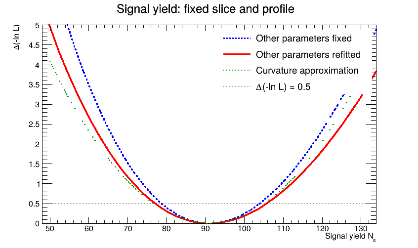
图中同时给出固定其他参数的切片、重新拟合其他参数的 profile，以及曲率法的抛物线。重点比较 profile 与抛物线在 ΔNLL = 0.5 附近是否一致。Profile 计算会改变模型参数，因此画图后恢复了已保存的拟合状态。
9. 多维模型与 simultaneous fit
9.1 两个独立观测量的乘积
若在给定参数后 $u$ 与 $v$ 独立，则联合 PDF 为 $p(u,v)=p(u)p(v)$。PROD 创建 RooProdPdf。下面给一个二维 toy 分布，说明乘积不是把两个组分在同一横轴上相加。
w2 = ROOT.RooWorkspace("w2", "two observables")
w2.factory("Gaussian::gu(u[-5,5],mu_u[0.5],s_u[0.8,0.1,3])")
w2.factory("Gaussian::gv(v[-5,5],mu_v[-0.5],s_v[1.3,0.1,3])")
w2.var("s_u").setConstant(True)
w2.var("s_v").setConstant(True)
w2.factory("PROD::joint(gu,gv)")
uv_data = w2.pdf("joint").generate(ROOT.RooArgSet(w2.var("u"), w2.var("v")), 10000)
h2 = uv_data.createHistogram("uv", w2.var("u"), RF.Binning(50), RF.YVar(w2.var("v"), RF.Binning(50)))
c = ROOT.TCanvas("c_roo_2d", "Independent observables", 660, 510)
c.SetRightMargin(0.15)
h2.SetTitle("Independent Gaussian observables;u;v")
h2.Draw("COLZ")
print("Generated 2D events =", uv_data.numEntries())
c.SaveAs("fit_figures/roofit-two-observables.png")
display(Image(filename="fit_figures/roofit-two-observables.png"))RooWorkspace w2("w2", "two observables");
w2.factory("Gaussian::gu(u[-5,5],mu_u[0.5],s_u[0.8,0.1,3])");
w2.factory("Gaussian::gv(v[-5,5],mu_v[-0.5],s_v[1.3,0.1,3])");
w2.var("s_u")->setConstant(true);
w2.var("s_v")->setConstant(true);
w2.factory("PROD::joint(gu,gv)");
auto uv_data = w2.pdf("joint")->generate(RooArgSet(*w2.var("u"), *w2.var("v")), 10000);
auto h2 = uv_data->createHistogram("uv", *w2.var("u"), Binning(50), YVar(*w2.var("v"), Binning(50)));
c = new TCanvas("c_roo_2d", "Independent observables", 660, 510);
c->SetRightMargin(0.15);
h2->SetTitle("Independent Gaussian observables;u;v");
h2->Draw("COLZ");
std::cout << "Generated 2D events = " << uv_data->numEntries() << std::endl;
c->SaveAs("fit_figures/roofit-two-observables.png");Generated 2D events = 10000
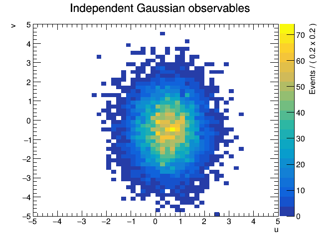
独立假设要由物理或数据支持。相关量一般需要 $p(u\mid v)p(v)$，例如让 Gaussian 的均值依赖 $v$。expr / RooFormulaVar 可建立这种参数关系；factory 中小写 expr 创建普通函数，大写 EXPR 创建归一化 PDF，不能互换。更复杂的响应还可用卷积描述，例子见 RooFit 官方教程目录。
9.2 两组数据共享一个峰位
假设两台已刻度探测器 A、B 观测同一条谱线，峰位相同但 Gaussian 宽度不同。分别测得 300 和 500 个信号事件；这个示例不含本底，目的是看懂 shared parameter 和 category。
RooCategory 标记数据来自哪一组，RooSimultaneous 把各组的 PDF 对应到类别。总 likelihood 为 $L_A(\mu,\sigma_A)L_B(\mu,\sigma_B)$，不是把两条谱相加后假设一个共同分辨。
z = ROOT.RooRealVar("z", "energy offset", -5, 5, "keV")
shared_mean = ROOT.RooRealVar("shared_mean", "shared peak position", 0.4, -2, 2)
sigma_a = ROOT.RooRealVar("sigma_a", "resolution A", 0.7, 0.1, 3)
sigma_b = ROOT.RooRealVar("sigma_b", "resolution B", 1.2, 0.1, 3)
pdf_a = ROOT.RooGaussian("pdf_a", "detector A", z, shared_mean, sigma_a)
pdf_b = ROOT.RooGaussian("pdf_b", "detector B", z, shared_mean, sigma_b)
data_a = pdf_a.generate(ROOT.RooArgSet(z), 300)
data_b = pdf_b.generate(ROOT.RooArgSet(z), 500)
channel = ROOT.RooCategory("channel", "detector")
channel.defineType("A")
channel.defineType("B")
combined = ROOT.RooDataSet("combined", "A and B", ROOT.RooArgSet(z), RF.Index(channel), RF.Import("A", data_a))
tagged_b = ROOT.RooDataSet("tagged_b", "B events", ROOT.RooArgSet(z), RF.Index(channel), RF.Import("B", data_b))
combined.append(tagged_b)RooRealVar z("z", "energy offset", -5, 5, "keV");
RooRealVar shared_mean("shared_mean", "shared peak position", 0.4, -2, 2);
RooRealVar sigma_a("sigma_a", "resolution A", 0.7, 0.1, 3);
RooRealVar sigma_b("sigma_b", "resolution B", 1.2, 0.1, 3);
RooGaussian pdf_a("pdf_a", "detector A", z, shared_mean, sigma_a);
RooGaussian pdf_b("pdf_b", "detector B", z, shared_mean, sigma_b);
auto data_a = pdf_a.generate(RooArgSet(z), 300);
auto data_b = pdf_b.generate(RooArgSet(z), 500);
RooCategory channel("channel", "detector");
channel.defineType("A");
channel.defineType("B");
RooDataSet combined("combined", "A and B", RooArgSet(z), Index(channel), Import("A", *data_a));
RooDataSet tagged_b("tagged_b", "B events", RooArgSet(z), Index(channel), Import("B", *data_b));
combined.append(tagged_b);sim = ROOT.RooSimultaneous("sim", "shared mean fit", channel)
sim.addPdf(pdf_a, "A")
sim.addPdf(pdf_b, "B")
shared_mean.setVal(0)
sim_result = sim.fitTo(combined, RF.Save(), RF.Extended(False), RF.PrintLevel(-1))
print("Simultaneous status =", sim_result.status(), "covQual =", sim_result.covQual())
for par in (shared_mean, sigma_a, sigma_b):
print(f"{par.GetName()} = {par.getVal():.4f} +/- {par.getError():.4f} keV")RooSimultaneous sim("sim", "shared mean fit", channel);
sim.addPdf(pdf_a, "A");
sim.addPdf(pdf_b, "B");
shared_mean.setVal(0);
auto sim_result = sim.fitTo(combined, Save(), Extended(false), PrintLevel(-1));
std::cout << "Simultaneous status = " << sim_result->status() << " covQual = " << sim_result->covQual() << std::endl;
for (auto par : {&shared_mean, &sigma_a, &sigma_b})
std::cout << par->GetName() << " = " << par->getVal() << " +/- " << par->getError() << " keV" << std::endl;Simultaneous status = 0 covQual = 3 shared_mean = 0.3828 +/- 0.0323 keV sigma_a = 0.6977 +/- 0.0285 keV sigma_b = 1.2115 +/- 0.0384 keV
分别画出各组自己的数据和拟合 PDF，两个 PDF 引用的是同一个 shared_mean 对象。这样读图即可确认共同峰位并没有强迫两组峰宽相同。
frame_a = z.frame(RF.Title("Detector A"))
frame_b = z.frame(RF.Title("Detector B"))
data_a.plotOn(frame_a, RF.Binning(30))
pdf_a.plotOn(frame_a)
data_b.plotOn(frame_b, RF.Binning(30))
pdf_b.plotOn(frame_b)
c = ROOT.TCanvas("c_roo_sim", "Shared peak position", 820, 400)
c.Divide(2, 1)
c.cd(1)
frame_a.Draw()
c.cd(2)
frame_b.Draw()
c.SaveAs("fit_figures/roofit-simultaneous.png")
display(Image(filename="fit_figures/roofit-simultaneous.png"))auto frame_a = z.frame(Title("Detector A"));
auto frame_b = z.frame(Title("Detector B"));
data_a->plotOn(frame_a, Binning(30));
pdf_a.plotOn(frame_a);
data_b->plotOn(frame_b, Binning(30));
pdf_b.plotOn(frame_b);
c = new TCanvas("c_roo_sim", "Shared peak position", 820, 400);
c->Divide(2, 1);
c->cd(1);
frame_a->Draw();
c->cd(2);
frame_b->Draw();
c->SaveAs("fit_figures/roofit-simultaneous.png");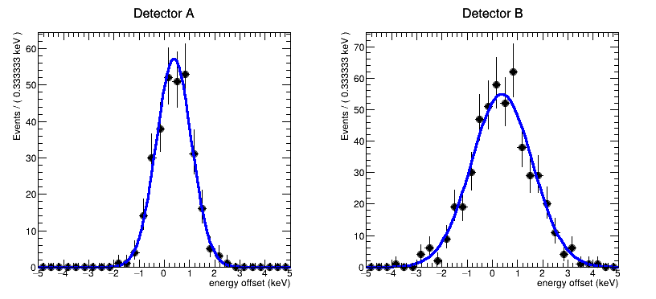
如果两台仪器有未知刻度偏移，就不能直接假设峰位严格相同，应把偏移作为模型中的量处理。若有独立标定测量，也可通过 constraint 项引入；不能把当前拟合本身给出的值又当作独立约束使用。更一般的 category 绘图和建模见 rf501。
10. 用 toy experiments 验证参数误差
一张谱上的 residual 用来找模型与数据的局部不符；多次独立 toy experiments 则可以检验估计量的偏差和误差尺度。两者不应混称为同一种 pull 检验。
重复 Gaussian 测量，固定每次 100 个事件，生成真值为 $\mu_0=0.4$、$\sigma_0=0.7$，定义
$$\operatorname{pull}(\hat\mu)=\frac{\hat\mu-\mu_0}{\widehat{\sigma}_{\hat\mu}}.$$
如果估计没有明显偏差且误差描述合适，pull 均值应接近 0，宽度接近 1。有限次实验也有涨落；这不是要求把图调到恰好 0 和 1。下面显式统计拟合失败次数，不将失败样本悄悄忽略。
ROOT.RooRandom.randomGenerator().SetSeed(20260911)
toy_pull = ROOT.TH1D("toy_pull", ";pull of mean;experiments", 30, -5, 5)
failed = 0
sum_pull = 0.0
sum_pull2 = 0.0
for i in range(200):
mean.setVal(0.4)
sigma.setVal(0.7)
toy = gauss.generate(obs, 100)
mean.setVal(0)
sigma.setVal(1)
rt = gauss.fitTo(toy, RF.Save(), RF.PrintLevel(-1))
if rt.status() != 0 or rt.covQual() != 3 or mean.getError() <= 0:
failed += 1
continue
p = (mean.getVal()-0.4)/mean.getError()
toy_pull.Fill(p)
sum_pull += p
sum_pull2 += p*pRooRandom::randomGenerator()->SetSeed(20260911);
auto toy_pull = new TH1D("toy_pull", ";pull of mean;experiments", 30, -5, 5);
int failed = 0;
double sum_pull = 0, sum_pull2 = 0;
for (int i = 0; i < 200; ++i) {
mean.setVal(0.4);
sigma.setVal(0.7);
auto toy = gauss.generate(obs, 100);
mean.setVal(0);
sigma.setVal(1);
auto rt = gauss.fitTo(*toy, Save(), PrintLevel(-1));
if (rt->status() != 0 || rt->covQual() != 3 || mean.getError() <= 0) {
++failed;
delete toy;
continue;
}
double p = (mean.getVal()-0.4)/mean.getError();
toy_pull->Fill(p);
sum_pull += p;
sum_pull2 += p*p;
delete toy;
}accepted = 200-failed
pull_mean = sum_pull/accepted
pull_sd = math.sqrt((sum_pull2-accepted*pull_mean**2)/(accepted-1))
print(f"Attempted = 200; successful = {accepted}; failed = {failed}")
print(f"Pull mean = {pull_mean:.3f}; sample SD = {pull_sd:.3f}")
print("Outside displayed range =", toy_pull.GetBinContent(0)+toy_pull.GetBinContent(31))
c = ROOT.TCanvas("c_roo_toys", "Parameter pull study", 720, 430)
toy_pull.Draw("HIST")
c.SaveAs("fit_figures/roofit-toy-pulls.png")
display(Image(filename="fit_figures/roofit-toy-pulls.png"))int accepted = 200-failed;
double pull_mean = sum_pull/accepted;
double pull_sd = std::sqrt((sum_pull2-accepted*pull_mean*pull_mean)/(accepted-1));
std::cout << "Attempted = 200; successful = " << accepted << "; failed = " << failed << std::endl;
std::cout << "Pull mean = " << pull_mean << "; sample SD = " << pull_sd << std::endl;
std::cout << "Outside displayed range = " << toy_pull->GetBinContent(0)+toy_pull->GetBinContent(31) << std::endl;
c = new TCanvas("c_roo_toys", "Parameter pull study", 720, 430);
toy_pull->Draw("HIST");
c->SaveAs("fit_figures/roofit-toy-pulls.png");Attempted = 200; successful = 200; failed = 0 Pull mean = -0.048; sample SD = 0.996 Outside displayed range = 0.0
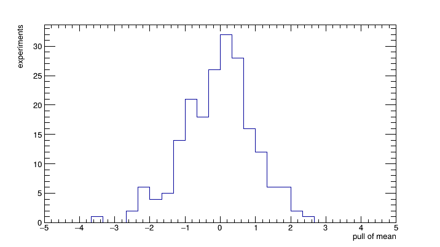
这里检验的是“生成模型与拟合模型相同”时的统计性质，不能证明真实实验没有本底误建模、刻度偏移或效率效应。若研究这些影响，应明确改变生成模型而保留分析模型，再报告这种模型失配造成的偏差。大规模自动研究可用 RooMCStudy / rf801。
11. 保存、恢复和继续分析
把模型、数据、snapshot 和拟合结果放在一起，可以在另一会话中恢复分析。import 会复制对象及其依赖到 workspace；Python 的 import 是保留字，所以用 getattr(w,"import") 调用这个方法。
下面使用独立教程输出文件 roofit_example.root，再次运行会更新它。恢复后要通过 workspace 取得其内部对象，而不是继续使用原会话中的同名变量。
w.loadSnapshot("unbinned_fit")
getattr(w, "import")(data)
getattr(w, "import")(result, "fit_result")
w.writeToFile("roofit_example.root")
saved_file = ROOT.TFile.Open("roofit_example.root")
saved_w = saved_file.Get("w")
saved_w.loadSnapshot("unbinned_fit")
print("Restored events =", saved_w.data("spectrum_data").numEntries())
print(f"Restored ns = {saved_w.var('ns').getVal():.4f}")
saved_file.Close()w.loadSnapshot("unbinned_fit");
w.import(*data);
w.import(*result, "fit_result");
w.writeToFile("roofit_example.root");
TFile saved_file("roofit_example.root");
auto saved_w = static_cast<RooWorkspace*>(saved_file.Get("w"));
saved_w->loadSnapshot("unbinned_fit");
std::cout << "Restored events = " << saved_w->data("spectrum_data")->numEntries() << std::endl;
std::cout << "Restored ns = " << saved_w->var("ns")->getVal() << std::endl;
saved_file.Close();Restored events = 600 Restored ns = 90.9550
12. Guideline：把例子换成自己的数据
- 先导入并核对事件数。 有逐事件值就建立
RooDataSet；只有直方图就建立RooDataHist。变量名要与 TTree 的 branch 对应。 - 在实际分析区间建立模型。 设置观测量范围，给峰位、宽度、本底参数合理初值。若参数需要拟合，要给范围，不要误设成常数。
- 选择需要的拟合。 只估计分布形状，用 fraction 模型和
Extended(False)；同时求信号、本底产额，用 yield 模型和Extended(True)。有逐事件数据可先用 unbinned；使用 binned 时开启 bin 积分并保留空 bin。 - 检查结果。 打印
status()、covQual()与参数；叠加总模型和各组分，检查 residual。若失败或参数贴边，先检查数据范围、初值和模型，再重新运行。 - 保存整套分析。 保留原始数据、workspace、拟合结果和 snapshot；比较另一次拟合后，先恢复 snapshot 再画原结果。
资料与文件
- 完整运行包（含讲义数据） · 下载本教程 notebook · ROOT C++ 完整宏。运行宏使用
root -l -b -q RooFit_Tutorial.C。 - L. Moneta, Fitting and Parameter Estimation, ROOT Tutorial at UERJ, Rio de Janeiro (2015), pp. 39–77.
- W. Verkerke and D. Kirkby, “The RooFit toolkit for data modeling,” eConf C0303241, MOLT007 (2003), arXiv:physics/0306116.
- ROOT Collaboration, RooFit tutorials, especially rf101 (basics), rf109 (residual), rf202 (extended likelihood), rf501 (simultaneous fit), rf614 (bin integration), rf801 (toy studies).
- ROOT Collaboration, RooAbsPdf::fitTo、RooAbsReal::getPropagatedError、RooWorkspace, reference documentation.
本教程在 ROOT 6.40.02 中执行验证。代码采用显式 RooFit 选项，便于对照 C++；新版 PyROOT 也支持 Save=True、PrintLevel=-1 等 keyword arguments。关于基础接口的完整例子见 rf101。